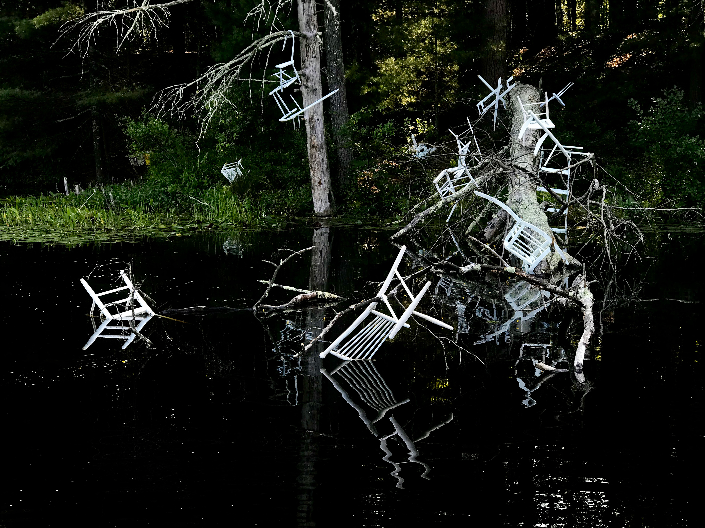
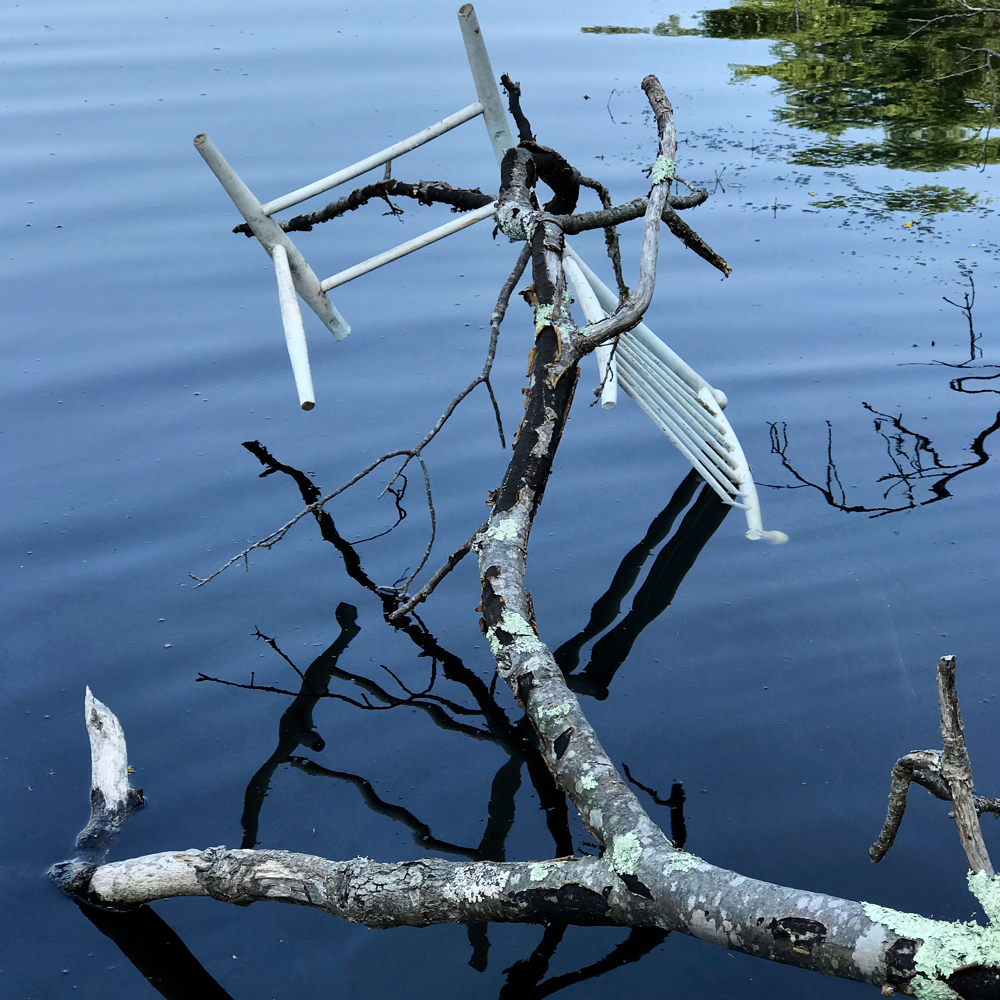

Metamorphic Reflections, 2018–2019
Documentation from Old Frog Pond Studio installation, Harvard, MA USA.
This site specific installation, presented in the show Speaking of Sculpture, 2018–2019 at the Old Frog Pond Studio, Harvard, MA, centers on the cycle of decay of twenty-four objects placed in and around the pond. Utilizing the shifting reflections in the water, the work probes questions of illusion, reality and time, compounded with beautiful, yet eerie visuals of the aftermath of disaster. The work speaks to the unfolding future and the potential for ensuing dislocation and migration as a result of climate catastrophes and the felt effects of environmental degradation.



